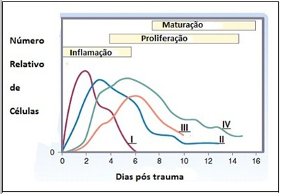
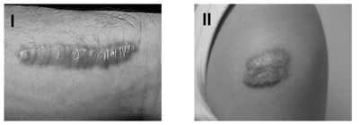

Questão 1 · Fases da Cicatrização · Cirurgia · 4000146870A respeito da cicatrização das feridas, marque a alternativa INCORRETA.
A Diabetes e idade avançada interferem diretamente na cicatrização de feridas.
B Cicatrização por segunda intenção é aquela em que a correção é feita por preenchimento por tecido de granulação.
C Na fase da maturação, a força tênsil da ferida é crucial na sua formação.
D Os macrófagos são as células que predominam na fase proliferativa da cicatrização.
E A força tênsil de uma ferida é determinada principalmente pelo colágeno.
Questão 2 · Cicatrização Anormal das Feridas · Cirurgia · 4000146304Mulher de 39 anos foi submetida a abdominoplastia há 6 meses e, atualmente, queixa-se de cicatriz abaulada, endurecida, avermelhada e pruriginosa, principalmente no centro da lesão. Ao exame, observa-se que a lesão não ultrapassa os bordos da incisão. Com base no caso descrito, qual o diagnóstico da lesão?
A Cicatriz hipertrófica.
B Queloide.
C Úlcera de Marjolin.
D Úlcera de Cushing.
E Dermatite atópica.
Questão 3 · Fatores de Risco para Cicatrização Anormal · Cirurgia · 4000146093São fatores que não inibem a cicatrização de feridas:
A Infecção.
B Radiação ionizante.
C Glicocorticoesteróides.
D Vasodilatação.
Questão 4 · Cicatrização de Feridas · Cirurgia · 4000145548Em relação à cicatrização, assinale a alternativa CORRETA:
A A presença de fator de crescimento é essencial à sobrevida dos fibroblastos
B Deve-se evitar a administração de drogas antiinflamatórias que interferem na ação dos polimorfos nucleares (PMN), essenciais para o processo ciacatricial
C Macrófagos e plaquetas são essenciais para angiogênese
D Os glicocorticoides aumentam a produção (síntese) de colágeno
Questão 5 · Cicatrização de Feridas · Cirurgia · 4000143173Sobre cicatrização de feridas é
A Na cicatrização por terceira intenção as bordas da ferida não estão aproximadas e existe infecção, ocorre nas grandes perdas teciduais.
B Na cicatrização por segunda intenção ocorre uma limpeza profunda, deiscência, e ressutura ou enxerto para restabelecer as condições de cicatrização.
C Na cicatrização por primeira intensão a ferida tem suas bordas aproximadas (suturadas primariamente).
D Em feridas contaminadas devemos preferir os fios multifilamentares.
E Nenhuma das alternativas está correta.
Questão 6 · Fases da Cicatrização · Cirurgia · 4000142764A sequência correta no processo de cicatrização padrão é:
A Vasodilatação, aumento de polimorfonucleares, neoformação vascular e colágeno.
B Vasodilatação, aumento de polimorfonucleares, neoformação vascular, fibroblastos e colágeno.
C Aumento de polimorfonucleares, vasodilatação, fibroblastos, neoformação vascular e colágeno.
D Vasodilatação, neoformação vascular, aumento de polimorfonucleares, fibroblastos e colágeno.
E Aumento de polimorfonucleares, vasodilatação, neoformação vascular, fibroblastos e colágeno.
Questão 7 · Fatores de Risco para Cicatrização Anormal · Cirurgia · 4000140658A cicatrização das feridas cirúrgicas envolve uma série de fatores. Para que ocorra uma cicatrização livre de infecções, o fator mais importante é a
A oxigenação da ferida.
B presença de fibronectina.
C produção de colágeno tipo I.
D ação dos fatores de crescimento.
Questão 8 · Cirurgia · Queloide · 4000139770Representa fator de risco reconhecido para o advento de cicatriz queloideana em incisão cutânea:
A a cicatrização por primeira intenção.
B a presença de infecção na incisão.
C a incisão em regiões de pele mais delgada.
D a incisão em regiões de pele com baixa concentração de melanina.
E a incisão longitudinal em relação às linhas de tensão da pele.
Questão 9 · Fases da Cicatrização · Cirurgia · 4000138308O complexo processo de cicatrização de feridas normalmente ocorre na seguinte sequência:
A Coagulação e inflamação, fibroplasia, deposição de matriz, angiogênese, epitelização, maturação do colágeno e retração da ferida.
B Coagulação e inflamação, deposição de matriz, fibroplasia, angiogênese, epitelização, maturação do colágeno e retração da ferida.
C Coagulação e inflamação, deposição de matriz, fibroplasia, angiogênese, maturação do colágeno, epitelização e retração da ferida.
D Coagulação e inflamação, deposição de matriz, angiogênese, fibroplasia, epitelização, maturação do colágeno e retração da ferida.
E Coagulação e inflamação, deposição de matriz, fibroplasia, angiogênese, epitelização, retração da ferida e maturação do colágeno.
Questão 10 · Cicatrização de Feridas · Cirurgia · 4000138240Os curativos são um meio terapêutico que têm a nalidade de promover a rápida cicatrização e prevenir a contaminação ou infecções. Em relação à cicatrização de feridas, são características de um curativo ideal:
A Manter um ambiente úmido, permitir a troca gasosa, remover exsudato excessivo.
B Manter um ambiente seco, remover o exsudato, de fácil manuseio.
C Permeável aos micro-organismos, fornecer proteção mecânica, ter isolamento térmico.
D Permitir variações de temperatura, estimular a dissecação, manter um ambiente seco.
E Não permitir trocas gasosas, ser totalmente impermeável, manter contato de todo o exsudato com a ferida.
Questão 11 · Cicatrização de Feridas · Cirurgia · 4000137446Os tipos de células predominantes na fase inflamatória da cicatrização e a causa mais comum de retardo do tempo desta cicatrização são, respectivamente:
A neutrófilos e fibroblastos / diabetes mellitus.
B neutrófilos e macrófagos / infecção.
C fibroblastos e macrófagos / idade do paciente.
D neutrófilos e linfócitos / radiação ionizante.
Questão 12 · Fases da Cicatrização · Cirurgia · 4000131236Analise o gráfico a seguir que representa o aparecimento de diferentes células na ferida pós-trauma durante os períodos de cicatrização Segundo este gráfico, que população celular representa a curva de número IV?

A Neutrófilos.
B Macrófagos.
C Fibroblastos.
D Linfócitos.
Questão 13 · Cicatrização de Feridas · Cirurgia · 4000129590É exemplo de cicatriz instável:
A queloide.
B cicatriz atrófica.
C úlcera de pressão com cicatrização por segunda intenção.
D estrias.
Questão 14 · Fases da Cicatrização · 4000118286Qual a fase de cicatrização de feridas caracterizada pela formação de tecido de granulação, consistindo em um leito capilar, fibroblastos, macrófagos, um frouxo arranjo de colágeno, fibronectina e ácido hialurônico?
A Fase de maturação.
B Fase proliferativa.
C Fase de remodelação.
D Fase de hemostasia.
E Fase inflamatória.
Questão 15 · Fatores de Risco para Cicatrização Anormal · Cirurgia · 4000114219O fator que mais dificulta a cicatrização das feridas é
A Anemia.
B Diabetes mellitus.
C Infecção tecidual local.
D Desnutrição.
Questão 16 · Fases da Cicatrização · Cirurgia · 4000111724Sobre o processo de cicatrização, é correto afirmar que
A na fase inflamatória, ocorre uma vasoconstrição imediata, seguida de uma vasodilatação. Os macrófagos são as mais importantes células desta fase.
B na fase de remodelação ocorre substituição do colágeno tipo I pelo tipo III, maisrígido, com a cicatriz atingindo aproximadamente 80% de sua força tênsil a partir de 3 meses.
C na fase proliferativa, que dura de 4-15 dias, ocorre diminuição da angiogênese.
D a epitelização se inicia com 12 horas e só se completa no final da fase de remodelação.
E a fase em que ocorre predomínio de fibroblastos é a fase inflamatória.
Questão 17 · Cicatrização Anormal das Feridas · Fatores de Risco para Cicatrização Anormal · Cirurgia · 4000111684Em relação à cicatrização patológica, a rma-se; 1. Em um mesmo indivíduo, a cicatriz pode ser normal em algumas áreas e hipertró ca em outras, sendo ombros, tórax e costas as áreas mais comuns para queloide; 2. A pele clara tem maior predisposição à queloide; 3. Fenômeno de Koebner é o surgimento de lesões patológicas na área de cicatrização, por exemplo, psoríase e vitiligo. Em relação às afirmações, apenas
A 1 e 2 são corretas.
B 2 e 3 são corretas.
C 1 e 3 são corretas.
D a 1 é correta.
E a 3 é correta.
Revisar: possível letra faltando em enunciado
Questão 18 · Fases da Cicatrização · Cirurgia · 4000101167Sobre a cicatrização de feridas analise as proposições: I - A fase inflamatória é constituída de duas etapas, a primeira etapa é a fase de vasoconstricção, onde a lesão endotelial desencadeia a liberação de agentes vasoconstrictores como a epinefrina e o tromboxano A2. II - Os macrófagos são considerados os maestros do processo de cicatrização. Eles produzem o PDGF e o TGFBeta que atraem os fibroblastos e estimulam a produção de colágeno. III - A Migração dos polimorfonucleares (PMNs) é interrompida apenas quando a contaminação da ferida é controlada. Os PMNs sobrevivem até 24-48 horas, depois a tendência é que predominem os mononucleares como monócitos e linfócitos.
A Todas as assertivas são verdadeiras.
B Apenas a assertiva I e II são verdadeiras.
C Apenas a assertiva III é falsa.
D Apenas as assertivas II e III são verdadeiras.
Questão 19 · Fatores de Risco para Cicatrização Anormal · 4000083617São fatores que dificultam a cicatrização tecidual adequada: I - Deficiência de vitaminas. II - Isquemia. III - Diabetes melito. Quais estão corretos?
A Apenas I e II.
B Apenas I e III.
C Apenas II e III.
D I, II e III.
Questão 20 · Cicatrização de Feridas · Cirurgia · 4000082254A cicatrização de feridas é um processo biológico dinâmico e depende de diversos fatores (intrínsecos e extrínsecos) para alcançar o resultado ideal: uma cicatriz exível, plana, de coloração próxima à pele circundante e sem limitação de movimentos . Em relação aos fatores que influenciam a qualidade de uma cicatriz,
A a mobilização e massagem precoces (24 horas) da ferida cirúrgica ajudam a produzir um melhor resultado de cicatriz.
B o fechamento da ferida cirúrgica em planos distintos minimiza o espaço morto e o risco de coleções, além de diminuir a tensão na pele e favorecer um melhor resultado.
C o uso de cremes à base de corticosteroides promove uma diminuição da atividade dos fibroblastos e se mostrou efetivo na prevenção de cicatrizes hipertróficas e/ou queloides.
D a excisão cirúrgica seguida de radioterapia é o tratamento de escolha para cicatrizes hipertróficas e queloides, pelo seu baixo índice de complicações e recidivas.
Questão 21 · Fases da Cicatrização · Cicatrização de Feridas · 4000063192É central seu papel na cicatrização de feridas operatórias:
A linfócitos B
B linfócitos T
C macrófagos
D mastócitos
E plaquetas ida oib pr ed
Questão 22 · Fases da Cicatrização · Cicatrização de Feridas · 4000050383Qual tipo celular é mais prevalente na fase inicial da cicatrização das feridas?
A Linfócito.
B Plasmócito.
C Fibroblasto.
D Neutrófilo.
E Célula epitelial.
Questão 23 · Fatores de Risco para Cicatrização Anormal · 4000034324Paciente do sexo masculino, 36 anos, vítima de traumatismo na panturrilha esquerda há três dias, procurou uma UPA para tratamento. Ao exame, apresentava ferida cortocontusa, superficial com 3cm de diâmetro, sem sinais infecciosos. Em relação aos curativos e à cicatrização da ferida é CORRETO:
A A cicatrização será mais bem-sucedida em ambiente frio, seco e limpo
B A taxa de epitelização sob curativo oclusivo será maior do que se a ferida for deixada descoberta
C Se for empregado curativo absortivo haverá maior maceração da pele circundante
D A manutenção de pH levemente alcalino e com alta tensão de oxigênio local propiciaria bom ambiente para proliferação de fibroblastos
Questão 24 · Cicatrização Anormal das Feridas · Cirurgia · 4000030019Durante a cicatrização da ferida cirúrgica, múltiplos fatores podem prejudicar seu resultado, EXCETO:
A Infecção
B Isquemia
C Alcalose
D Deficiência de vitamina C
E Desnutrição
Questão 25 · Cicatrização de Feridas · Cirurgia · 4000029822Qual é a principal célula na fase proliferativa da cicatrização de uma ferida?
A Célula de Langhans.
B Fibroblasto.
C Mastócito.
D Linfócito.
Questão 26 · Cicatrização Anormal das Feridas · Cirurgia · 4000029773A cicatrização da ferida operatória estará em risco no caso do paciente operado ter utilizado o seguinte fármaco na última semana:
A oxaliplatina.
B gencitabina.
C fluorouracil.
D bevacizumab.
Questão 27 · Fases da Cicatrização · 4000024808As principais fases da cicatrização, em ordem cronológica, são:
A inflamatória, de fibroplasia e de maturação
B de maturação, de fibroplasia e inflamatória
C inflamatória, de maturação e de fibroplasia
D de fibroplasia, de inflamação e de maturação
Questão 28 · Fatores de Risco para Cicatrização Anormal · 4000019691O principal fator adverso na cicatrização de uma ferida operatória é:
A infecção.
B hipóxia.
C diabetes.
D desnutrição.
Questão 29 · Cicatrização Anormal das Feridas · Cirurgia · 4000125552Com relação às cicatrizes patológicas: queloide e cicatriz hipertrófica, as afirmações abaixo estão corretas, EXCETO:
A O queloide ocorre com mais frequência na face, região dos deltoides e pré-esternal.
B Os idosos são mais afetados que os jovens.
C Indivíduos da raça negra e orientais são mais propensos a desenvolver estas doenças.
D Hormônios sexuais influenciam na incidência de queloides.
E A triancinolona intralesional reduz o volume da lesão em alguns casos e, em outros, diminui a dor e o prurido.
Questão 30 · Fases da Cicatrização · Cirurgia · 4000115183Considere a ferida de uma laparotomia exploradora fechada por primeira intenção, sem complicações. Qual tipo celular deve predominar nessa ferida após 48 horas de seu início?
A Fibroblastos
B Plaquetas
C Neutrófilos polimorfonucleares
D Macrófagos
E Linfócitos
Questão 31 · Fase Inf lamatória · 4000099922Na fase inflamatória da cicatrização de uma ferida, ocorre:
A Vasodilatação local intensa das arteríolas e capilares seguida de vasoconstrição ediminuição da permeabilidade vascular.
B Formação de um tecido com leito capilar, fibroblastos, macrófagos e um frouxo arranjode colágeno, fibronectina e ácido hialurônico.
C Tentativa de limitar o dano mediante arada do sangramento, selamento da superfície,remoção de tecidos necróticos, resíduos estranhos e bactérias.
D Movimento centrípeto de toda a espessura da pele circundante reduzindo aquantidade de cicatriz desorganizada.
Questão 32 · Fatores de Risco para Cicatrização Anormal · 4000082398Qual dos fatores abaixo leva a retardo na cicatrização de um ferimento?
A Sutura sob tensão adequada.
B Diabetes melito compensado.
C Hipotireoidismo.
D Falta de oxigenação tecidual.
Questão 33 · Cirurgia · Queloide · 4000078784Queloides são cicatrizes que:
A Estão contidas pela incisão, são finas e podem ser previnidas.
B Crescem além das bordas da incisão e não regridem com o tempo.
C Crescem dentro da incisão, regridem com o tempo e são fáceis de tratar
D São típicas de pacientes arianos, de fina espessura e não apresentam sintomas.
Questão 34 · Fases da Cicatrização · 4000067912Com relação à cicatrização de feridas, pode-se afirmar que:
A durante a fase de maturação o conteúdo de proteoglican volta a um nível que se aproxima ao da pele normal.
B o principal colágeno da cicatriz é o tipo III com menores quantidades do tipo I.
C o acúmulo de colágeno na ferida alcança o máximo dentro de quatro a cinco semanas após a agressão.
D a molécula de colágeno tem quantidade abundante de hidroxileucina e hidroxivalina que são fundamentais para o processo de contração da ferida.
E a matriz provisória da fase proliferativa é povoada por linfócitos.
Questão 35 · Cicatrização Anormal das Feridas · Cirurgia · 4000064946Paciente de 30 anos foi submetida à laparotomia mediana há aproximadamente 90 dias, e queixa-se do aspecto da sua cicatriz e prurido local. Ao exame físico, apresenta uma lesão elevada, alargada, com coloração arroxeada e de consistência endurecida ao longo de toda a cicatriz, porém sem ultrapassar os limites da mesma. Esta paciente apresenta provavelmente um (a):
A Tumor desmoide.
B Cicatriz hipertrófica.
C Reação de corpo estranho pelo fio de sutura.
D Cicatriz queloide.
Questão 36 · Fases da Cicatrização · Cirurgia · 4000035463Durante o tratamento de feridas, as células consideradas essenciais para que ocorra a cicatrização são os:
A Macrófagos.
B Monócitos.
C Linfócitos.
D Polimorfonucleares.
Questão 37 · Fatores de Risco para Cicatrização Anormal · Cirurgia · 4000033164Homem de 45 anos, engenheiro civil, clinicamente estável, bem nutrido e apresentando, como comorbidade, tabagismo (25 maços/ano) e uso crônico de corticosteroide foi submetido a apendicectomia. Evoluiu com infecção incisional superficial no pós-operatório necessitando de curativos diários e uso de antibiótico. Em relação à cicatrização da ferida cirúrgica nesse caso, assinale a alternativa CORRETA:
A Há indicação de administração de vitamina C (ácido ascórbico) em altas doses para aumentar a força tênsil da cicatriz.
B Há indicação de limpezas diárias da ferida com clorexidina ou iodopovidona que potencializam a migração celular.
C Há indicação de se administrar vitamina A para amenizar os efeitos do uso de corticosteroide.
D Há risco elevado de evoluir com cicatriz hipertrófica ou queloide devido ao tabagismo.
Questão 38 · Fases da Cicatrização · 4000024710A cicatrização de feridas é dividida em três fases, são elas:
A fase inflamatória, fase proliferativa, fase maturacional.
B fase inflamatória, fase secretiva, fase proliferativa.
C fase secretiva, fase proliferativa, fase maturacional.
D fase inflamatória, fase secretiva, fase maturacional.
Questão 39 · Fases da Cicatrização · 4000023391No processo cicatricial, existem quatro fases que seguem a respectiva ordem:
A Hemostasia, proliferativa, inflamatória e remodelamento.
B Inflamatória, hemostasia, proliferativa e remodelamento.
C Hemostasia, inflamatória, remodelamento e proliferativa.
D Hemostasia, inflamatória, proliferativa e remodelamento.
Questão 40 · Fases da Cicatrização · Cicatrização de Feridas · Cicatrização Anormal das Feridas · 4000021907Sobre cicatrização de feridas é CORRETO afirmar:
A Todas as três fases da cicatrização das feridas (fase inflamatória, fase proliferativa e fase de maturação ou remodelamento) podem ocorrer simultaneamente, e as fases podem se sobrepor com seus processos individuais.
B Os macrófagos surgem na ferida antes mesmo dos polimorfonucleares e atuam orquestrando a liberação de citocinas.
C A fase de maturação ou remodelamento é responsável pela angiogênese e produção da matriz extracelular provisória.
D Infecção, diabetes mellitus, período da infância, desnutrição e radioterapia são fatores que inibem a cicatrização de feridas.
Questão 41 · Fases da Cicatrização · Cirurgia · 4000127672Paciente 13 anos, masculino, hígido, vítima de ferimento corto-confuso com três centímetros de extensão em região mentoniana, profundo, com sangramento discreto, após queda da própria altura, há cerca de duas horas. Considerando o ferimento descrito no caso clínico, é correto afirmar que a fase
A fibroblástica é a última a acontecer, inicia-se quarenta e oito horas após o trauma e compreende a liberação de fatores de crescimento pelas plaquetas.
B exsudativa é a primeira a ocorrer, dura cerca de quatro dias e compreende a hemostasia, a migração de leucócitos e a epitelização.
C Proliferativa é primeira a ocorrer, inicia-se uma semana após o trauma e compreende a hemostasia, a granulação e a contração da ferida.
D exsudativa é a última a ocorrer, dura cerca de dez dias e compreende a síntese de colágeno, a granulação e a contração da ferida.
Questão 42 · Fatores de Risco para Cicatrização Anormal · Cirurgia · 4000125914A causa mais comum de deficiência de cicatrização de uma ferida está associada à hipovitaminose:
A A.
B B.
C C.
D D.
E E.
Questão 43 · Fases da Cicatrização · Cirurgia · 4000120368Os macrófagos estão presentes na ferida a partir do quarto dia após a lesão até que a ferida esteja completamente curada. A principal função dos macrófagos na cicatrização de feridas é a
A morte intracelular de bactérias.
B produção de colágeno.
C ativação da proliferação celular.
D modulação do ambiente da ferida.
E aumento da tensão cicatricial.
Questão 44 · Fases da Cicatrização · Cirurgia · 4000118435Em relação à cicatrização das feridas podemos afirmar que:
A O colágeno, na cicatrização das feridas, é o principal responsável pela neoformação vascular.
B O processo de maturação é o responsável pela contração da ferida.
C Na fase proliferativa da cicatrização das feridas, observamos uma predominância celular de fibroblastos.
D Os polimorfonucleares fagocitam as bactérias e são importantes na formação da força tênsil da cicatriz.
E A profundidade da lesão não interfere no processo de reparação e no resultado final, estético e funcional da cicatriz.
Questão 45 · Terapia por Pressão Negativa · Contraindicações · 4000103304A terapia por pressão negativa (também conhecida como terapia com curativo a vácuo) trouxe um grande avanço no tratamento de feridas complexas. Qual dos pacientes abaixo apresenta uma contraindicação ao uso da terapia por pressão negativa?
A Paciente em 10º dia pós-operatório de cirurgia cardíaca, com mediastinite e deiscência de esternotomia.
B Paciente vítima de atropelamento há 2 dias, com perda cutânea e necrose muscular em membro superior.
C Paciente com trauma abdominal, submetido à cirurgia de controle de danos e peritoneostomia.
D Paciente diabético com neuropatia sensitiva e úlcera crônica infectada em região plantar.
Questão 46 · Fatores de Risco para Cicatrização Anormal · Cirurgia · 4000089184O conhecimento do processo de cicatrização de feridas é importante para o cirurgião. Em relação aos fatores que interferem na cicatrização de feridas, é correto afirmar:
A os anti-inflamatórios esteroidais aceleram a fase inflamatória da cicatrização, causando efeito inibitório na taxa e na qualidade da cicatrização.
B as diminuições na temperatura ambiental exercem uma vasodilatação reflexa autonômica, que reduz a microcirculação local, através da diminuição da oxigenação e da nutrição tecidual.
C a deficiência do zinco dificulta a função das metaloproteinases da matriz.
D o ácido ascórbico é irrelevante na produção de N-acetil galactosamina.
Questão 47 · Fases da Cicatrização · 4000079463No processo de cicatrização, as primeiras células a migrarem para a ferida são os:
A Mastócitos
B Leucócitos polimorfonucleares
C Macrófagos
D Monócitos
E Eosinófilos
Questão 48 · Cicatrização de Feridas · Cirurgia · 4000075086Na cicatrização a célula fundamental que orquestra a liberação de citocinas e estimula o maior número de processos subsequentes é:
A Neutrófilo.
B Fibroblasto.
C Macrófago.
D Célula epitelial.
Questão 49 · Cicatrização de Feridas · Cirurgia · 4000075065Além da Vitamina C, são elementos especialmente importantes para a Cicatrização de feridas:
A Vitamina A e Biotina.
B Cobre e Ferro.
C Magnésio e Selênio.
D Vitamina B2 e Zinco.
Questão 50 · Queloide · 4000071959São muitos os fatores que interferem no tipo de cicatriz (se adequada, inadequada ou proliferativa). Quelóides caracterizam- se pelo deposição excessiva de qual das alternativas?
A Fibroblastos
B Macrófagos
C Colágeno
D Colagenase
Questão 51 · Queloide · 4000070056O desenvolvimento de queloide é mais frequente quando o procedimento cirúrgico foi realizado na região:
A Pré-esternal.
B Femoral.
C Plantar.
D Genital.
Questão 52 · Curativos Especiais · 4000068463Assinale qual dos curativos relacionados a seguir está contraindicado na presença de vasculite, pois seu componente pode induzir ativação da doença autoimune.
A Espuma de polímeros.
B Com hidrogel.
C A base de alginatos.
D Hidrocoloides.
E Com colágenos.
Questão 53 · Classif icação da Cicatrização · Fases da Cicatrização · 4000068426O reparo das feridas é o esforço dos tecidos lesados para restaurar a função e a estrutura normais após o trauma. Sobre a cicatrização das feridas, assinale a alternativa INCORRETA:
A As três fases da cicatrização das feridas são: inflamação, proliferação e regeneração.
B Os tipos de fechamento de ferida são divididos em: reparo primário (primeira intenção), secundário (espontâneo) e terciário (primário retardado).
C As células predominantes na fenda cirúrgica nas primeiras 24 horas são as células polimorfonucleares e após 24- 48 horas a predominância passa a ser de células mononucleares.
D A combinação da vasodilatação com permeabilidade vascular aumentada leva aos achados clínicos de rubor, tumor, calor e dor.
E A fase proliferativa é caracterizada pela formação do tecido de granulação.
Questão 54 · Fases da Cicatrização · 4000054726Nos primeiros dois dias de pós-operatório, qual tipo de célula predomina na ferida durante a cicatrização?
A Monócito
B Fibroblasto
C Macrófago
D Neutrófilo
Questão 55 · Fases da Cicatrização · Fatores de Risco para Cicatrização Anormal · Cirurgia · 4000036252A cicatrização de uma ferida cirúrgica é um processo biológico importante e pode ser afetado por vários fatores. Quanto ao processo de cicatrização e ao risco de deiscência de feridas cirúrgicas e infecção local, assinale a alternativa incorreta:
A pacientes com insuficiências vasculares apresentam risco maior de deiscência de ferida cirúrgica.
B na primeira semana após o procedimento cirúrgico, ocorre a fase inflamatória do processo de cicatrização, caracterizado por dor, rubor, calor e edema.
C cicatrização por segunda intenção está associada a ferimentos infectados, com grandes perdas teciduais.
D antibióticos tópicos são excelentes para evitar infecções de feridas, principalmente nos ferimentos extensos.
Questão 56 · Fases da Cicatrização · 4000033413Em relação à cicatrização de feridas, assinale a alternativa ERRADA:
A A histamina e serotonina são alguns dos elementos que atuam aumentando a permeabilidade dos vasos, favorecendo a exsudação de plasma e a migração de células para o espaço extracelular.
B Niveis baixos de lactato, pH ácido e aumento da tensão de oxigênio estimulam a angiogênese.
C Os leucócitos são responsáveis pela produção de colagenase e elastase, que promovem a limpeza da ferida.
D Os macrófagos fagocitam leucócitos degradados e bactérias e secretam diversos fatores de crescimento e quimiotáxicos.
Questão 57 · Fases da Cicatrização · Cirurgia · 4000027763Em relação a resposta à cicatrização, é CORRETO afirmar que:
A A resposta inflamatória ocorre pouco antes da coagulação.
B A vasodilatação é o primeiro evento da inflamação e ocorre 10-15 minutos após a vasoconstrição inicial.
C Os leucócitos aumentam após cerca de 7 dias do início da lesão.
D Os fibroblastos iniciam somente cerca de 10 dias após a lesão.
Questão 58 · Fases da Cicatrização · 4000023742No processo de cicatrização, as primeiras células a migrarem para a ferida são os
A mastócitos.
B leucócitos polimorfonucleares.
C macrófagos.
D linfócitos T.
Questão 59 · Fases da Cicatrização · 4000022498As principais fases da cicatrização, em ordem cronológica, são:
A inflamatória, de fibroplasia e de maturação
B de fibroplasia, de maturação e inflamatória
C inflamatória, de maturação e de fibroplasia
D de fibroplasia, inflamatória e de maturação
E de maturação, de fibroplasia e inflamatória
Questão 60 · Epitelização · 4000021101Em um processo de cicatrização normal de feridas suturadas, a epitelização su ciente para evitar a entrada de micro- organismos demora até
A 2 dias.
B 7 dias.
C 10 dias.
D 15 dias.
Revisar: possível letra faltando em enunciado
Questão 61 · Fases da Cicatrização · 4000020043Sobre cicatrização de feridas é correto afirmar, exceto:
A Na fase reativa, os macrófagos liberam proteinases que degradam a matriz extracelular e são cruciais para a remoção de material estranho.
B Os neutrófilos são as primeiras células a migrarem para a ferida, participando da fase proliferativa.
C A função primária dos fibroblastos é sintetizar colágeno, que começam a produzir durante a fase celular da inflamação.
D Após a fase maturacional, em comparação a pele não ferida, a resistência à tração é de apenas 30%.
Questão 62 · Terapia por Pressão Negativa · Cirurgia · 4000018676O resultado esperado da utilização de pressão negativa no tratamento de catástrofes abdominais é:
A orientação da fístula entero-atmosférica.
B melhora imunológica pelo incremento na função de linfócitos T, mediada por fatores intercelulares.
C evacuação dos recessos da cavidade peritoneal.
D promoção da cicatrização da ferida pelo incremento no fluxo sanguíneo, mediado por fatores angiogênicos.
Questão 63 · Cicatrização de Feridas · 4000011034O reparo de feridas é um fenômeno biológico de resposta dos tecidos lesados na tentativa de restaurar a função e a estrutura normais após o trauma. Acerca do processo de cicatrização de feridas, assinale a alternativa correta.
A Em uma ferida grande, como uma úlcera de pressão, a escara ou o exsudato fibrinoso refletem a fase proliferativa.
B O macrófago é a única célula verdadeiramente fundamental para a cicatrização de feridas, pois serve para orquestrar a liberação de citocinas e estimular processos subsequentes de cicatrização.
C Durante uma lesão tecidual aguda, a lesão dos vasos sanguíneos resulta em vasodilatação local intensa, seguida de vasoconstrição e parada do sangramento.
D A função primária dos fibroblastos é sintetizar colágeno, que eles começam a produzir durante a fase celular da maturação ou regeneração.
E O tecido resultante da ferida cicatrizada é repleto de cristas interpapilares, o que potencializa a ancoragem e garante maior resistência à neoepiderme.
Questão 64 · Fase de Maturação e Remodelamento · 4000002528Quais as células predominantes encontradas na fase de maturação de uma ferida em cicatrização?
A Macrófagos.
B Neutrófilos.
C Fibroblastos.
D Linfócitos.
Questão 65 · Fases da Cicatrização · Cirurgia · 4000125847Paciente em pós-operatório precoce de gastrectomia parcial por neoplasia, evolui com deiscência da ferida operatória e presença de infecção em pele e fáscia. Diante desse fato, responda qual a sequência das fases dos processos de cicatrização de tecido:
A Inflamatória, Proliferativa e Maturação.
B Inflamatória, Regenerativa e Maturação.
C Regenerativa, Maturação e Proliferativa.
D Regenerativa, Proliferativa e Remodelamento.
E Inflamatória, Regenerativa e Maturação.
Questão 66 · Fatores de Risco para Cicatrização Anormal · Cirurgia · 4000109731Qual a causa mais comum de retardo na cicatrização da ferida cirúrgica?
A Desnutrição.
B Infecção.
C Hipoperfusão tecidual.
D Imunossupressão.
E Idade acima de 60 anos.
Questão 67 · Fechamento Primário · 4000099365O fechamento primário retardado da ferida operatória está melhor indicado em qual das situações abaixo:
A Reparo de uma deiscência da ferida operatória uma semana após uma colectomiaeletiva.
B Apendicectomia em um apêndice perfurado.
C Drenagem de emergência de um abscesso diverticular seguido de sigmoidectomia ecolostomia.
D Colecistectomia eletiva com perda de bile para a cavidade abdominal durante acateterização do ducto cístico para a realização de colangiografia intra-operatória.
Questão 68 · Fechamento Primário · Fatores de Risco para Cicatrização Anormal · Fechamento Terciário · 4000096415Assinale a afirmação INCORRETA.
A O fechamento de uma ferida cutânea por cicatrização primária ou primeira intenção envolve o fechamento da ferida por aproximação direta da pele, por retralho ou enxerto.
B A cicatrização espontânea ou por segunda intenção envolve a cicatrização das feridas sem a manipulação cirúrgica.
C A cicatrização das feridas não é influenciada por fatores sistêmicos.
D A cicatrização terciária, ou por terceira intenção combina tanto fechamento primáriocomo da cicatrização espontânea.
Questão 69 · Deiscência de Ferida Operatória · Fatores de Risco para Cicatrização Anormal · 4000087784Qual das alternativas abaixo, não pode ser considerado como fator associado à deiscência da ferida operatória?
A Obesidade
B Infecção intra - abdominal
C Desnutrição
D Tempo de duração do ato operatório
E Idade avançada
Questão 70 · Fase de Maturação e Remodelamento · 4000085007Os colágenos de maior importância na cicatrização em humanos são dos tipos
A I e II.
B I e III.
C II e IX.
D II e VI.
E III e XII.
Questão 71 · Cicatrização Anormal das Feridas · 4000083800Sobre os fatores que podem interferir no processo cicatricial, assinale a alternativa CORRETA:
A A idade do paciente não influencia o processo cicatricial.
B Atualmente, o diabetes mellitus não representa mais perigo.
C A hipotermia e a dor podem prejudicar a cicatrização.
D Os distúrbios hormonais, como o hipotireoidismo, não afetam este processo.
Questão 72 · Fases da Cicatrização · 4000083787No processo de cicatrização, a fase também chamada regenerativa, que é responsável pelo processo reparador com reepitelização, síntese da matriz e neovascularização para aliviar a isquemia do traumatismo é chamada:
A Fase maturacional.
B Fase proliferativa.
C Fase hiperêmica.
D Fase toxêmica .
Questão 73 · Fases da Cicatrização · 4000081747O conhecimento do processo de cicatrização de feridas é imprescindível ao médico que realiza procedimentos cirúrgicos. Sobre a cicatrização de feridas, é CORRETO afirmar:
A A fase proliferativa é caracterizada pela formação do colágeno.
B A fase de maturação é caracterizada pela deposição de colágeno.
C A fase inflamatória é caracterizada pela angiogênese.
D A fase de remodelamento é caracterizada pela presença de neutrófilos.
Questão 74 · Cicatrização de Feridas · Cirurgia · 4000077721Qual das células abaixo é considerada como responsável pela contração de feridas?
A Neutrófilos.
B Macrófagos.
C Linfócitos.
D Plaquetas.
E Miofibroblastos.
Questão 75 · Fases da Cicatrização · 4000072918Paciente de 35 anos é atendido no pronto-socorro com ferida incisa no antebraço direito, causada por acidente com faca. O fato ocorreu há uma hora, tendo sido o ferimento lavado com água corrente pelo próprio paciente. O exame da lesão mostra ferida incisa de 8 cm de extensão, não revela contaminação grosseira e envolve pele e subcutâneo. A ferida é suturada usando o de vicryl 000 no tecido subcutâneo e o de nylon mono lamentar 0000 na pele. Espera-se que o processo de epitelização se inicie no período de:
A Vinte e quatro horas.
B Uma semana.
C Três dias.
D Um mês.
Questão 76 · Fases da Cicatrização · Cirurgia · 4000044343O processo de cicatrização de uma ferida operatória envolve a liberação de várias células e substâncias inflamatórias. Qual célula abaixo tem seu pico de presença na ferida, no 2° DPO e está praticamente ausente no 6° DPO?
A Linfócito.
B Macrófago.
C Fibroblastos.
D Neutrófilos.
E Monócito.
Questão 77 · Fases da Cicatrização · Cirurgia · 4000032058Em relação à celularidade durante a cicatrização de feridas, assinale a alternativa ERRADA:
A A maior presença de fibroblastos ocorre na fase proliferativa.
B A maior presença de linfócitos ocorre na fase de maturação.
C A maior presença de macrófagos ocorre na fase inflamatória.
D A maior presença de neutrófilos ocorre na fase inflamatória.
Questão 78 · Fases da Cicatrização · Cicatrização de Feridas · Cirurgia · 4000031888Marque a INCORRETA com relação a cicatrização das feridas.
A Feridas agudas evoluem num processo cicatricial ordenado e cronológico.
B O tecido de granulação aparece na fase proliferativa.
C Os tipos de fechamento são divididos em reparos primário, secundário, terciário e quaternário.
D São fases da cicatrização: inflamação, proliferação e maturação.
Questão 79 · Fatores de Risco para Cicatrização Anormal · Cirurgia · 4000029524Assinale a alternativa que contém o fator que NÃO inibe a cicatrização de feridas:
A Zinco.
B Adriamicina.
C Radiação ionizante.
D Glicocorticoide Esteroidal.
Questão 80 · Fase de Maturação e Remodelamento · 4000018662Sobre a cicatrização das feridas podemos afirmar que, EXCETO:
A As primeiras células a migrarem para uma ferida são os leucócitos polimorfonucleares, com pico em 24 a 48 horas.
B A força de tração de uma ferida nunca se iguala à força tensil de um tecido não lesionado.
C Existem 18 tipos de colágenos no corpo humano. Os 2 tipos mais importantes na cicatrização das feridas são os tipos I e III.
D A camada intestinal com maior importância na cicatrização de uma anastomose é a submucosa.
E A fase da cicatrização mais afetada pelos corticosteroides é a fase de maturação e remodelação da cicatriz.
Questão 81 · Cicatrização Anormal das Feridas · Cirurgia · 4000003949Queloides ou cicatrizes hipertróficas são definidas como cicatrizes proliferativas caracterizadas por deposição excessiva de colágeno versus degradação de colágeno. Apesar de ambas terem aspecto visual pouco agradável, sua siopatologia, prevenção e tratamento não são os mesmos. A respeito disso, julgue os itens a seguir como verdadeiro (V) ou falso (F) e indique a alternativa com a ordem CORRETA: I. Queloides são cicatrizes que crescem além das margens da ferida original. É mais prevalente em pessoas de pele escura, ocorrendo em 15-20% dos afro-americanos, asiáticos e hispânicos; II. Os queloides podem ser prevenidos, porém são frequentemente refratários à intervenção médica e cirúrgica; III. Cicatrizes hipertróficas são cicatrizes elevadas que permanecem nos limites da ferida original, porém como os queloides, raramente regridem espontaneamente; IV. A cicatriz hipertró ca não pode ser prevenida. In amação prolongada e recapeamento insu ciente, como pode ocorrer em uma queimadura, provocam a cicatriz hipertrófica; V. A cicatriz do queloide tem mais tendência a ocorrer acima das clavículas, no tronco, nos membros superiores e na face.
A I - V; II - F; III - F; IV - F; V - V.
B I - V; II - F; III - V; IV - F; V - V.
C I - V; II - V; III - F; IV - V; V - F.
D I - F; II - V; III - V; IV - V; V - F.
E I - F; II - V; III - F; IV - V; V - F.
Revisar: possível letra faltando em enunciado
Questão 82 · Fatores de Risco para Cicatrização Anormal · 4000002041Sobre a cicatrização de feridas, é CORRETO afirmar:
A Os neutrófilos e as células endoteliais são as principais células da fase proliferativa.
B A característica mais importante da fase de remodelamento é a confecção de tecido de granulação a ser reorganizado.
C Isquemia, infecção, corpo estranho, edema, pressão tecidual elevada e tabagismo são fatores que influem negativamente na cicatrização.
D Na fase inflamatória, os macrófagos são as primeiras células de defesa a chegar à ferida, com maior concentração 24 horas após a lesão.
E O processo de cicatrização em serosas é lento em relação ao da pele. As principais células envolvidas nesse processo são os neutrófilos e fibroblastos.
Questão 83 · Cirurgia · Cicatriz Hipertróf ica · Queloide · 4000126441As lesões apresentadas nas guras I e II abaixo são originadas de um processo de cicatrização patológica, em ambos os casos por deposição excessiva versus degradação diminuída do colágeno. O conhecimento e a diferenciação clínica de tais lesões são extremamente importantes uma vez que elas possuem comportamentos clínicos diferentes. Com base nessas informações, é CORRETO afirmar:

A Ambas as lesões são mais prevalentes em pacientes melanodérmicos, parecendo haver predisposição genética, com dificuldade em previni-las e tratá-las, na medida que, além de não haver relatos de regressão espontânea, as mesmas respondem mal à intervenção médica e cirúrgica.
B Essas lesões também diferem histologicamente das cicatrizes normais. O centro da lesão I caracteriza-se pela escassez de células, comparado com o da lesão II que possui ilhas compostas de agregados de fibroblastos, pequenos vasos e fibras de colágeno em toda a derme.
C A lesão I representa um fenótipo hiperproliferativo que se desenvolve a partir de múltiplos efeitos estimuladores, enquanto a lesão II trata-se de um fenótipo singular, que parece ser geneticamente predisposto à alteração na produção da matriz extracelular, desviado de modo irreversível por fatores como o TGF-ß.
D A tensão excessiva aplicada nas bordas da ferida em cicatrização sinaliza para a formação de macrófagos ativados, aumentando a deposição de colágeno e formando um tecido conjuntivo exuberante, que ultrapassa, tanto na lesão I como na II, os limites da ferida original.
Questão 84 · Fases da Cicatrização · Cirurgia · 4000123662Qual fase da cicatrização é a mais afetada pelos corticoides exógenos?
A Fase inicial de migração celular e angiogênese.
B Fase proliferativa.
C Maturação
D Remodelação de cicatrização.
E Fibroplasia
Questão 85 · Fase de Hemostasia · 4000077215O evento que ocorre, inicialmente, na primeira fase da cicatrização de feridas é:
A Formação do trombo.
B Contração da ferida.
C Aumento da vascularização.
D Migração de fagócitos.
Questão 86 · Fatores de Risco para Cicatrização Anormal · Cirurgia · 4000071271Causa mais comum de atraso de cicatrização é a:
A hipóxia
B infecção
C diabetes
D desnutrição
Questão 87 · Deiscência de Ferida Operatória · Fatores de Risco para Cicatrização Anormal · Cirurgia · 4000045639As principais causas que levam à deiscência de sutura NÃO incluem:
A Hipofluxo.
B Alimentação precoce.
C Desnutrição.
D Infecção.
E Idade.
Questão 88 · Fatores de Risco para Cicatrização Anormal · Cirurgia · 4000037791Sobre o processo de cicatrização e suas alterações, assinale a alternativa INCORRETA.
A A deficiência de vitamina C relaciona-se com a produção de colágeno de baixa qualidade podendo interferir na força tênsil da cicatriz
B A radiação reduz a cicatrização em alças intestinais favorecendo a ocorrência de fístulas após suturas e anastomoses
C A inflamação e a coagulação constituem eventos precoces da cicatrização de tecidos
D A reposição de ácido ascórbico tem sido recomendada rotineiramente no pós- operatório com objetivo de efetivar o processo de cicatrização
Questão 89 · Fechamento Secundário · 4000009953A contração cicatricial é um fenômeno melhor observado na
A Cicatrização por 2ª intenção.
B Cicatrização por 3ª intenção.
C Cicatrização por 1ª intenção.
D Área doadora de enxertos cutâneos.
Questão 90 · Desnutrição · 4000009876A causa mais comum de deficiência de cicatrização dos tecidos está associada à hipovitaminose do tipo
A D
B C
C B
D A
Questão 91 · Fase Prolif erativa · 4000009860Na fase proliferativa do processo de cicatrização das feridas, existe predominância celular de
A Macrófagos
B Neutrófilos
C Fibroblastos
D Linfócitos
Questão 92 · Fatores de Risco para Cicatrização Anormal · Cirurgia · 4000000184A cicatrização de uma ferida é um processo dinâmico e complexo, que consiste na substituição da lesão tecidual por tecido conjuntivo. Durante esta cascata de eventos inter-relacionados, alguns fatores locais e/ou sistêmicos podem interferir negativamente prejudicando a cicatrização. Dos fatores sistêmicos discriminados a seguir apresentados, assinale aquele que NÃO interfere no processo cicatricial.
A Insuficiência Hepática
B Hipertireoidismo
C Corticoterapia
D Desnutrição
E Tabagismo
Questão 93 · Fases da Cicatrização · Cirurgia · 4000112462As principais fases da cicatrização, em ordem cronológica, são:
A Inflamatória, fibroplasia e maturação.
B Fibroplasia, maturação e inflamatória.
C Inflamatória, maturação e fibroplasia.
D Fibroplasia, inflamatória e maturação.
E Maturação, fibroplasia e inflamatória.
Questão 94 · Fases da Cicatrização · 4000065752No processo de cicatrização, as feridas cirúrgicas suturadas em primeira intenção estarão epitelizadas e poderão ser molhadas após um intervalo, em dias, de:
A Quatro.
B Cinco.
C Dois.
D Três.
Questão 95 · Cicatrização Anormal das Feridas · Cirurgia · Queloide · 4000043340F.L.Z., 21 anos, sexo feminino, afrodescendente, estudante, vai ser operada de cisto em região palmar da mão direita. Está preocupada, pois sua mãe apresenta queloides em região peitoral e na cicatriz da cesariana. Na tentativa de acalmá-la, o médico COMETEU UM EQUÍVOCO ao afirmar que:
A "Pode ficar tranquila, pois queloides não incidem nas regiões palmar e plantar"
B "Realmente, o aparecimento de queloide pode ser influenciado pela raça, o que não implica que apareça em todos os negros".
C "Apesar de o aparecimento do queloide ter caráter hereditário, nem todos os descendentes vão desenvolver essa complicação".
D "É verdade que há uma tendência maior de aparecimento na puberdade o que não é o seu caso".
Questão 96 · Fases da Cicatrização · Cirurgia · 4000119288Em relação à cicatrização de feridas, assinale a alternativa CORRETA.
A As fases de cicatrização são didaticamente divididas em fase inflamatória, proliferativa e maturação, elas ocorrem independentemente, nunca simultaneamente, e nem se sobrepõem, primeiro acaba uma fase para começar a outra.
B A fase proliferativa se caracteriza por maior permeabilidade vascular, migração de células para a ferida por quimiotaxia e formação de tecido de granulação.
C As cicatrizes hipertróficas são definidas como cicatrizes que crescem além das margens da ferida original, raramente regredindo com o tempo.
D A fase inflamatória se caracteriza por maior permeabilidade vascular, migração de células para a ferida por quimiotaxia, secreção de citocinas e fatores de crescimento na ferida e ativação das células migrantes.
E Na fase inflamatória ocorre angiogênese e fibroplasia, com processo de formação de novos vasos sanguíneos e quimioatração de fibroblastos para o local inflamatório.
Questão 97 · Fases da Cicatrização · 4000076988Pode-se dividir o processo de cicatrização em:
A Liquefação; coagulação; retração.
B Coagulação; inflamação; proliferação.
C Retração; maturação; infiltração.
D Inflamação; proliferação; maturação.
Questão 98 · Indicações · Contraindicações · Princípios do Tratamento · 4000075135Qual das alternativas abaixo consiste em uma contraindicação absoluta para terapia em câmara hiperbárica?
A Intoxicação por monóxido de carbono.
B História de DPOC.
C História de edema pulmonar em alta altitude.
D Pneumotórax sem tratamento.
Questão 99 · Cicatrização de Feridas · Cirurgia · 4000127011Em relação à cicatrização de feridas, é correto afirmar:
A As interleucinas IL-4 e IL-10 estão entre as principais citocinas pró-inflamatórias ativas durante a primeira fase do processo cicatricial.
B O neutrófilo é a única célula verdadeiramente fundamental para a cicatrização de feridas, orquestrando a liberação de citocinas e estimulando processos subsequentes de cicatrização.
C À medida que aumenta a síntese de colágeno tipo 1, aumenta a resistência à ruptura da ferida.
D Sem a presença de Polimorfonucleares (PMN), incisões estéreis não serão capazes de cicatrizar normalmente. ida oib pr ed
Questão 100 · Fase Prolif erativa · 4000074917Os eventos característicos da fase proliferativa do processo de cicatrização são:
A Formação de coágulo e angiogênese.
B Remodelação, granulação e angiogênese.
C Degradação da matriz extracelular e do colágeno.
D Fibroplasia, granulação e epitelização.
Questão 101 · Fatores de Risco para Cicatrização Anormal · Cirurgia · 4000030923Sr. Alexandre, 78 anos, tabagista, obeso com IMC de 37 kg/m², diabético compensado com glicemia de 120 mg/dL, interna para correção cirúrgica de hérnia inguinoescrotal à direita. Paciente foi encaminhado para o centro cirúrgico onde foi realizada a tricotomia, porém a cirurgia foi suspensa e realizada no dia seguinte. No quarto dia de pós operatório apresentou infecção de parede. Com relação ao processo de cicatrização da ferida operatória podemos afirmar, EXCETO:
A O diabetes mellitus prejudica o processo de cicatrização em todos os estágios.
B Pacientes idosos tem maior probabilidade de cicatrização retardada, em comparação com pacientes mais jovens.
C Após a fase inflamatória ocorre, em sequência, a fase de maturação e a proliferativa, respectivamente.
D Na cicatrização por 1ª intenção observa-se tecido de granulação escasso e cicatrização mais rápida.
E A deficiência de vitamina C e de zinco resulta em atrasos da cicatrização de ferida.
Questão 102 · Cicatrização de Feridas · Cirurgia · 4000085658A função da vitamina C na cicatrização é a: Respostas: 1 12 23 34 45 56 67 78 89 100
A Transformação da hidroxiprolina.
B Ativação do complemento.
C Liberação de plaquetas.
D Neoformação capilar.